群馬県大泉町。
ブラジル系の方々が多く住む街として有名だ。
街のあちこちにポルトガル語の看板があり、ブラジル食材などを取り扱ったスーパーやブラジル料理のレストランも多い。
他にもペルー系やベトナム系、フィリピン系の人も多く、人種のるつぼとはこういう事か、と実感させられる。
そんな大泉町に以前から見てみたかったお地蔵さんがあったのだ。
場所は市街からほど近い城之内公園。
休日なのに行ってみたら誰もいませんでしたよ。今のご時世、ありがたい事といえばありがたい。
さて、お地蔵さんに行く前に寄り道。
公園に入るとまず目に入るのが小さな古墳。
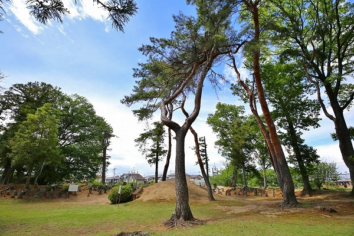
その名も
城ノ内古墳。
7世紀後半に造られたものを昭和53年に移築したもの。
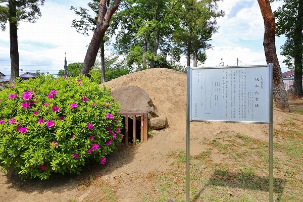
内部の石室の様子は外から見る限りでは全然判りませんでした。
私の知り合いに古墳にを見るとコーフンする方々がいらっしゃる。自分はまだまだその境地には達してないのだが、出来れば内部には入ってみたいのだった。
大仏の胎内に入れないと急にテンションが下がる、という性分も
多分同じ病気なのだと思う。
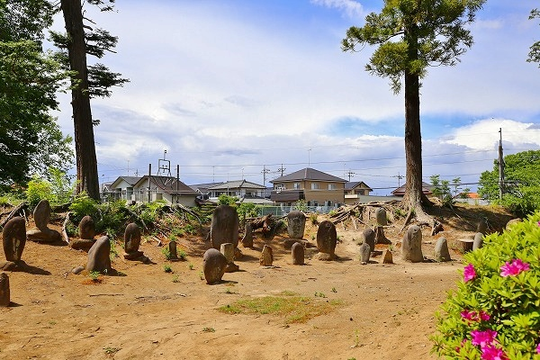
ただし、古墳の周辺に林立している石碑には興味津々でしたね。
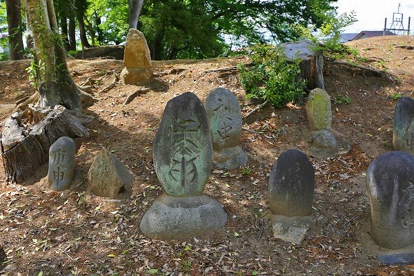
これらは
百庚申塔といい、江戸中期から明治期にかけて奉納された石碑である。
庚申塔に関しては説明が長くなるのでスパッと略すが（気になる人は何かで調べて）、江戸時代に流行した民間信仰である。
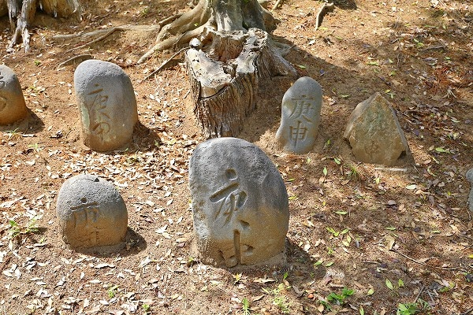
様々な庚申と刻まれた石碑が延々と並んでいる。
百庚申と呼ばれているが現在では85基が現存しているという。
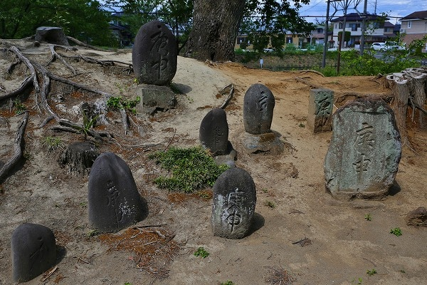
7世紀と江戸〜明治のコラボが面白かった。
で、ここからが本題です。
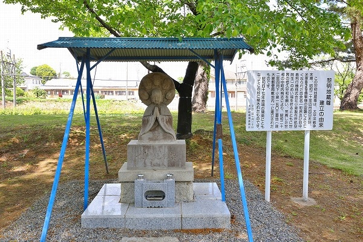
その古墳+庚申塔の近くにぽつんとお地蔵さんが鎮座している。
簡単ながら屋根が架けられ、足元も綺麗に整備されている。
コレが本日のメインディッシュ、
黎明地蔵尊でございます。
何故このお地蔵さんを見たかったかというと…
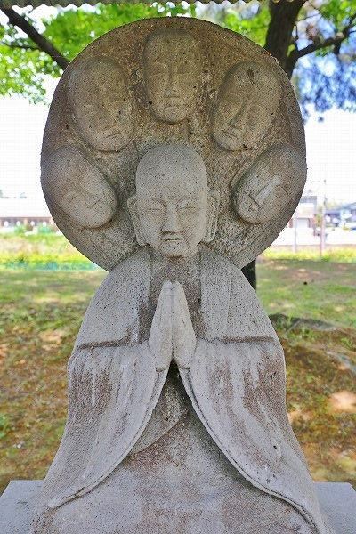
こんなお地蔵さんなんです。
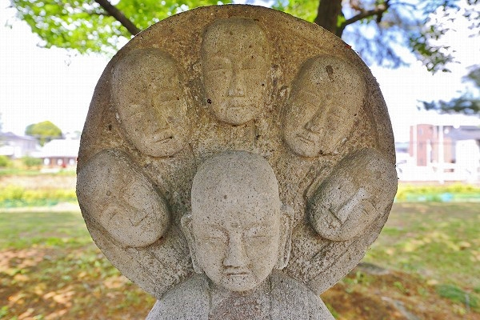
光背に顔が5つ並んでいるのだ。
コレ多分
六地蔵を表現しているんだと思うんですけど、にしても表現の方法として凄くないすか？
北斗百裂拳！みたいじゃないですか。
あるいは背後霊？
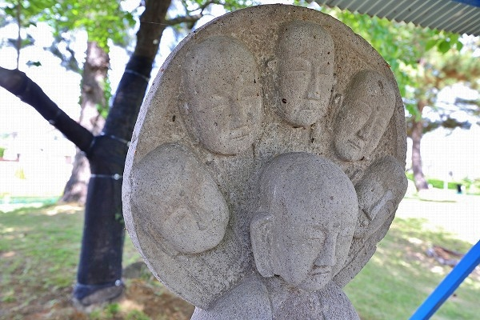
このお地蔵さん、昭和20年の空襲で亡くなった方々の冥福を祈ると共に世界平和のために
昭和22年に建立されたという。
この大泉町には戦前、東洋最大の航空機メーカであった中島飛行機の海軍機の組み立て工場である小泉製作所があった。
そのためB29の空襲を受け、百余名の方々が亡くなられたのだという。
小泉製作所は昭和15年に開設されたというからその操業期間は5年間という事になる。
戦後、中島飛行機は解体され、現代のスバルやその他多くの企業に姿を変えている。
小泉製作所も現在はパナソニックの工場となっている。
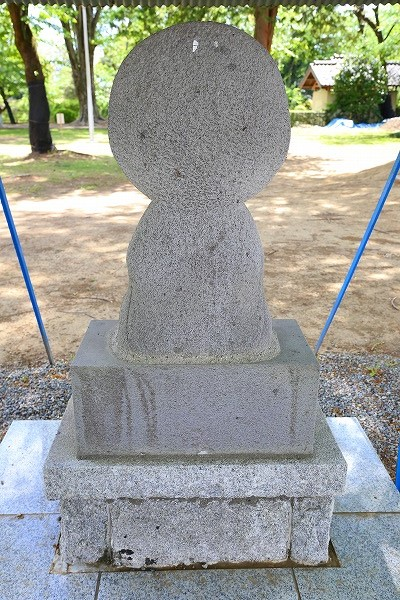
後ろ姿。
取り立てて特徴があるわけではないが、像の背中部分はビシャン叩きで綺麗に仕上げられている印象がある。
黎明地蔵尊という名前も新しい時代への期待が込められているのだろう。
一見、オモシロなお姿だが、
悲しい歴史が込められたお地蔵さんなのだ。
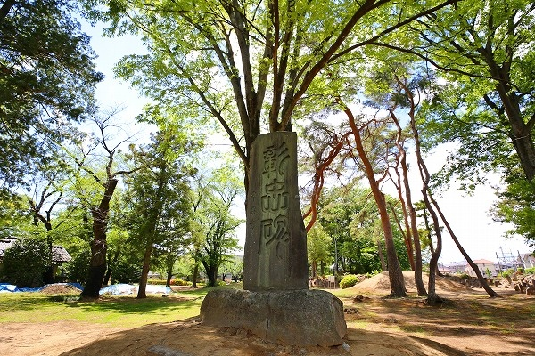
地蔵尊の近くには彰忠碑や
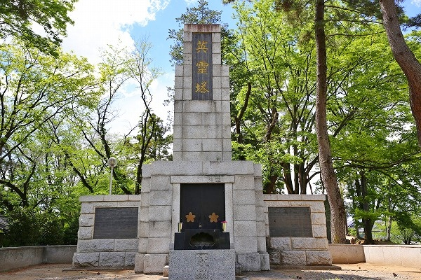
英霊塔が建っていた。
お地蔵さんから少し離れたところに児童公園のようなエリアがあり、そこにカッコイイ
サメの水飲み場があった。
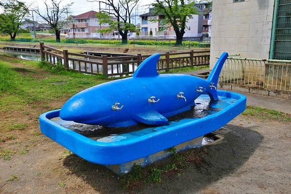
塗り直されており新しく見えるが、センスとしては案外黎明地蔵より古いのではなかろうか。
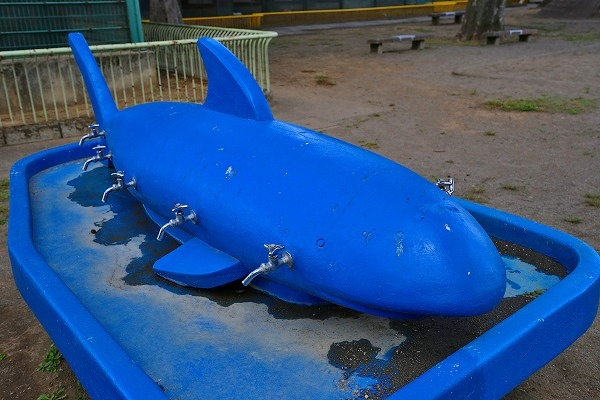
まるで名古屋の道徳公園の
コンクリのクジラを思わせる雄姿！
10人いっぺんに水が飲めるのですよ！凄い！
古代から戦後まで、この地の様々な歴史が詰め込まれた公園であった。
そういえばもうひとつ。
先程の黎明地蔵尊は昭和47年に移築されてきたのだが、元々あった場所が大泉郵便局だった。
その大泉郵便局の隣に
凄いアグレッシブな薬屋があるんです。
ひょっとして黎明地蔵と薬屋に何らかの関連があるのかなー、などと勝手に勘ぐったりして。
あ、全然とりとめのない方向に話が行ってますね。
でも、この素敵なお地蔵さんとアグレッシブな薬屋が隣あっていたなんて想像すると何とも愉快じゃありませんか。
これにて城之内公園の散策終了。
折角だからブラジル料理でも食いに行くか。
シュラスコ、シュラスコ食べ放題〜！